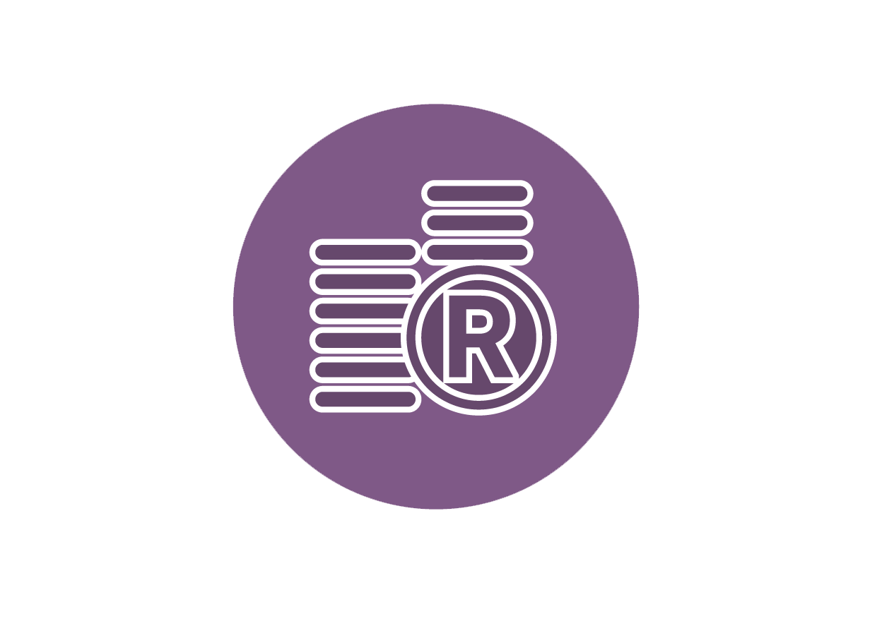

DISCOVER OUR WORK
The Active Foundation works with communities, who are the keepers of our natural resources, and other partners. We direct their energy and efforts so that they can be key levers of change for South Africa’s future.
